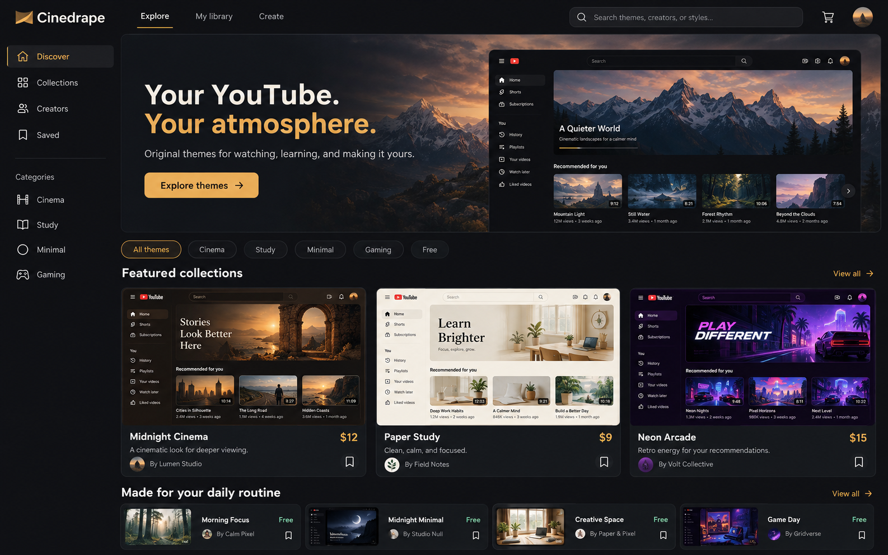
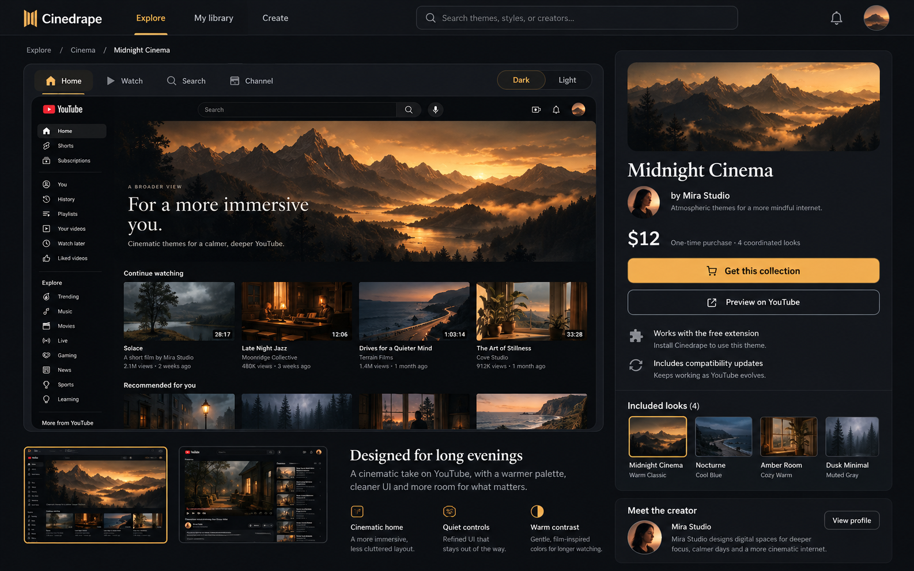
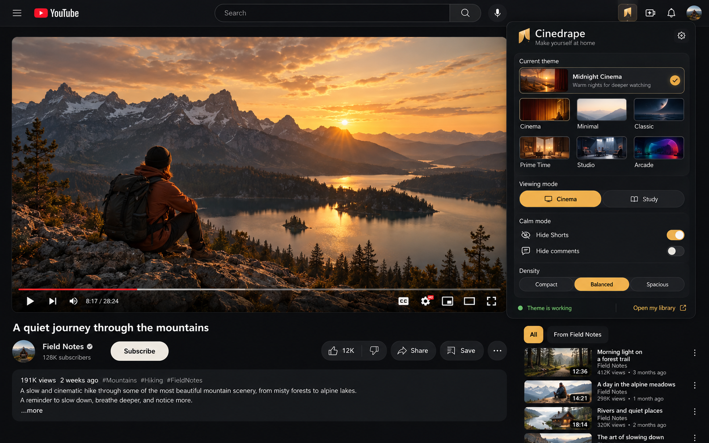
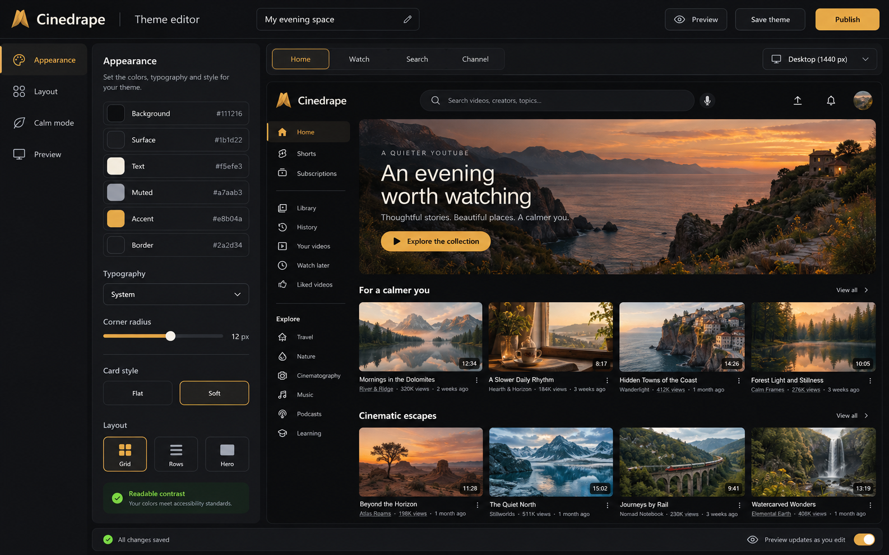
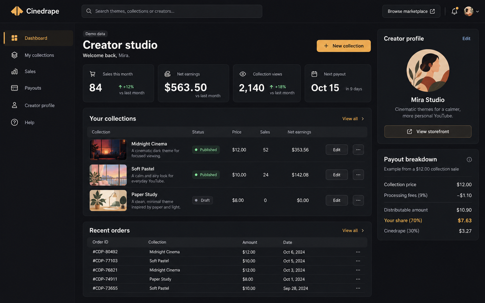

Your YouTube.
Your atmosphere.
Five concept screens show the proposed experience for discovering, buying, applying, designing, and selling original YouTube themes. These are generated design references, not screenshots of implemented features. Prices, creators, orders, and earnings are illustrative.
01 · Marketplace discovery
Browse complete looks with page previews, clear pricing, free options, and focused collections.

02 · Theme detail and purchase
Preview a collection across different pages, inspect its included looks, and buy it with a clear one-time price.

03 · Viewing experience and extension popup
The popup provides quick access to themes, viewing presets, calm mode and density while the viewer stays on YouTube.

04 · Visual theme editor
Edit colors, type, card shapes and layout beside a large live preview, then save or submit a design.

05 · Creator studio
Manage collections, inspect sales and understand the proposed creator payout split.
